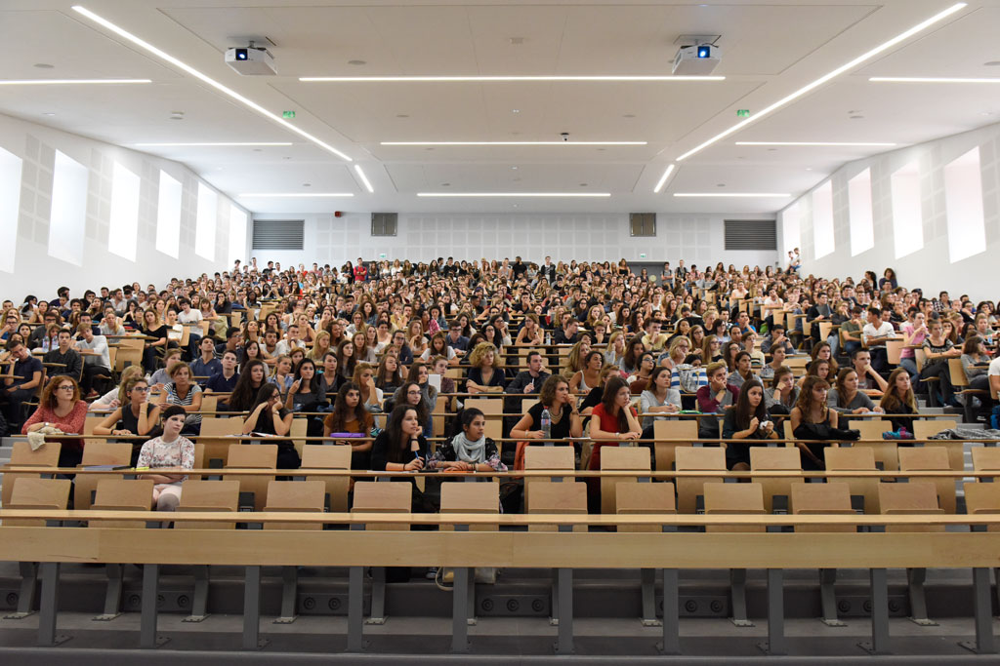

Bienvenue à l'Université des Arts Corporels et Sportifs
Notre université, fondée le 7 janvier 2015 à Tourcoing, est un lieu d'excellence où chaque étudiant façonne son avenir. En tant qu'établissement public, notre engagement est de vous guider vers l'excellence au cours d'une formation enrichissante de 4 ans.
Cursus Innovants
Découvrez nos cursus novateurs, comprenant la prépa armée, la prépa générale et la prépa sportive. Nous sommes déterminés à développer vos compétences athlétiques et physiques grâce à nos programmes de pointe.
Cours Armée
Explorez notre filière "Cours Armée" pour une formation unique qui vous préparera aux défis physiques et mentaux des forces armées. Relevez le défi et obtenez un aperçu de ce que la vie militaire peut offrir.

Cours Sportifs
Plongez dans notre filière "Cours Sportifs" pour une expérience immersive dans le monde passionnant du sport. Développez vos compétences athlétiques et découvrez une variété de disciplines sportives passionnantes.
Cours Généraux
Explorez notre filière "Cours Généraux" pour une formation complète qui élargira vos horizons intellectuels. Découvrez des matières variées et développez des compétences polyvalentes qui vous prépareront à un avenir prometteur.

Communauté Internationale
Rejoindre notre université, c'est intégrer une communauté dynamique. Chaque année, plus de 5000 étudiants du monde entier enrichissent notre établissement. Nos partenariats mondiaux facilitent l'accès des étudiants étrangers, favorisant une expérience d'apprentissage globale.
Logement Étudiant
La question du logement étudiant est une préoccupation majeure. Nous offrons, pendant les quatre années de formation, un logement et des repas, assurant des conditions optimales de réussite. À l'université, nous croyons en l'égalité des chances, garantissant à tous nos étudiants, qu'ils soient locaux ou internationaux, une chance égale de prospérer.
Reputation Mondiale
Notre école se distingue également par son classement exceptionnel. Classée 1ère au prestigieux classement de Shanghai en 2023, devant même l'université d'Harvard, notre établissement rayonne à l'échelle mondiale. Cette réputation repose sur la sélectivité de notre formation, où chaque candidat est soigneusement évalué.
Stages Professionnels
Deux semaines de stage par an offrent à nos étudiants une immersion progressive dans le monde professionnel, les préparant ainsi à une intégration réussie.